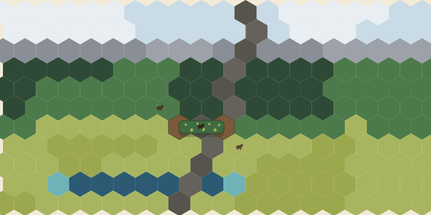

A highway is a wall to a grizzly. Wildlife Crossing puts you in charge
of taking those walls down — across 1.3 million square kilometres of
mountain corridor, from Yellowstone to the Yukon.
Free and open source. Single-player, offline, no account required.

One overpass. Two habitat patches that were separate a moment ago.
What is this game?
You coordinate a conservation initiative working along the real
Yellowstone to Yukon corridor — a chain of connected
mountain landscapes running from Wyoming to the Northwest Territories.
Roads, fences, and towns have cut that chain into pieces, and the animals
that need to move through it are stranded on either side.
Your job is to put it back together. Survey the land to find where
fragmentation is worst. Choose a road segment. Build a crossing. Then
watch what happens: animals find the route, populations that were
declining start to recover, donors notice, and the agencies and First
Nations partners who steward the next region start to trust you with it.
There is no way to lose. A crossing that attracts fewer animals than you
hoped is a puzzle, not a punishment — and the landscape keeps living
either way.
What makes it tick
Connectivity is mechanical
Habitat is modelled as patches on a hex map, scored on terrain,
size, connection, and how much of the edge touches a road. A patch
below its species' viable size slowly declines — until a crossing
links it into a bigger network. Connectivity isn't a score you
admire; it's the thing that decides who survives.
Seasons change the answer
A year is four seasons and about an hour of play. Grizzlies
hibernate out of the simulation each winter; elk and pronghorn
migrate on a schedule; frozen rivers open routes that were closed.
An overpass finished the week before a migration season is worth far
more than the same overpass finished the week after.
Access is earned, not bought
Eleven of the twelve regions start closed. They open when the
agencies, ranching coalitions, territorial governments, and First
Nations partnerships who steward them come to trust your work —
measured by the crossings you build and the populations that
recover. Trust is never taken away.
The ecology is real
Every species parameter traces back to published science. Pronghorn
refuse underpasses because they evolved to watch for predators
across open ground. Caribou need old growth because their winter
food is lichen that takes decades to grow. If the game and a nature
documentary disagree, the game is wrong.
Eight species at launch
Chosen for ecological accuracy in the corridor and for mechanical
variety — each one wants something different from you.
The map is the whole Yellowstone to Yukon corridor, divided into twelve
sub-areas. You start in the
Central Canadian Rockies
— Banff and the Bow Valley, where the world's most-studied wildlife
overpasses already prove the idea works. From there the corridor runs
south to
Greater Yellowstone
and north to the
Greater Mackenzie Mountains.
Linking those two ends with an unbroken chain of connected habitat is the
capstone Continental Connection milestone. Reaching it
doesn't end the game — nothing does.
The Yellowstone to Yukon corridor crosses the traditional territories of
more than seventy-five Indigenous peoples. The partnerships you work with
in-game are fictional, created to honour rather than represent real
Nations, and the narrative content is developed with cultural-advisor
review. Consent in this game is something you earn, never something you
buy or bypass — because that is how the real work goes.